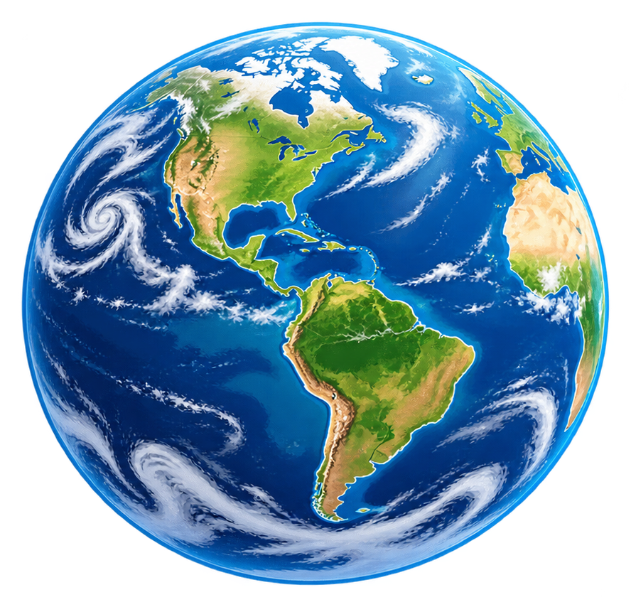
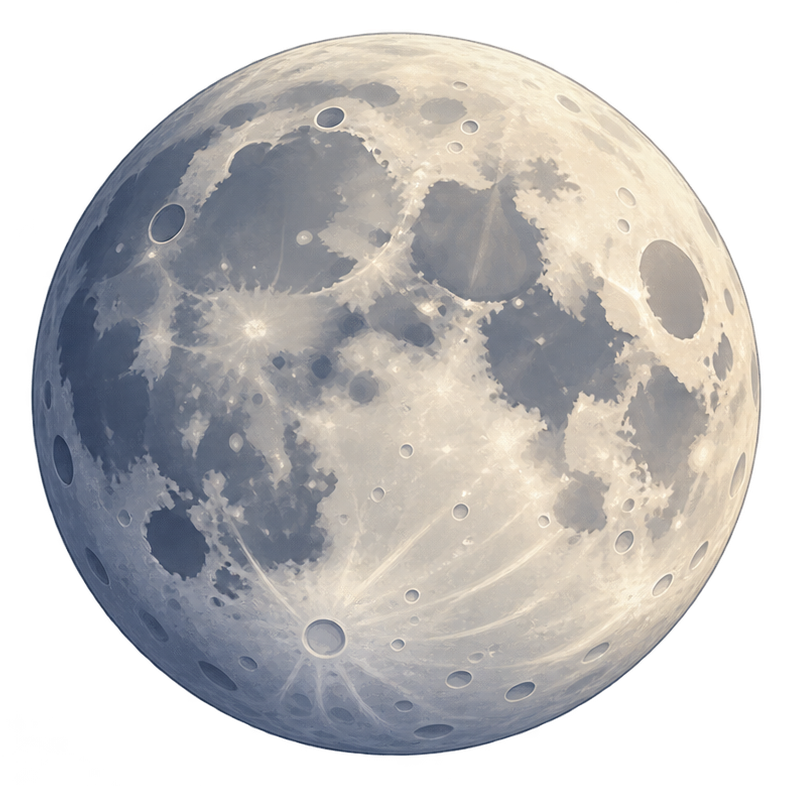

¿Sabías que...?
La distancia media entre la Tierra y la Luna es de unos 384.400 kilómetros. Aunque parece cercana en el cielo, ¡está bastante lejos!
La Luna tarda aproximadamente 27,3 días en dar una vuelta alrededor de la Tierra.
¿Alguna vez has mirado al cielo y te has preguntado qué hay más allá de las nubes? ¡Hoy vamos a viajar por el espacio para conocer dos cuerpos celestes muy especiales!


La Tierra es el planeta en el que vivimos. Es nuestro hogar y el único planeta conocido que alberga vida. Desde el espacio parece una enorme esfera azul porque gran parte de su superficie está cubierta de agua.
En nuestro planeta podemos encontrar:
La Tierra realiza dos movimientos muy importantes:
La Luna es el satélite natural de la Tierra. Esto significa que gira a su alrededor. No tiene luz propia: la vemos brillar porque refleja la luz del Sol.
La distancia media entre la Tierra y la Luna es de unos 384.400 kilómetros. Aunque parece cercana en el cielo, ¡está bastante lejos!
La Luna tarda aproximadamente 27,3 días en dar una vuelta alrededor de la Tierra.
A lo largo del mes vemos diferentes partes iluminadas de la Luna. Estas apariencias reciben el nombre de fases lunares.
¡Sí! La gravedad lunar es mucho menor que la de la Tierra. Por eso, una persona pesaría allí aproximadamente una sexta parte de lo que pesa en nuestro planeta y podría dar saltos más altos.
Si quieres aprender más sobre el universo, puedes visitar esta página:
La página de la NASA dedicada a la Luna
La Tierra es nuestro hogar y debemos protegerla. Para conseguirlo, podemos: